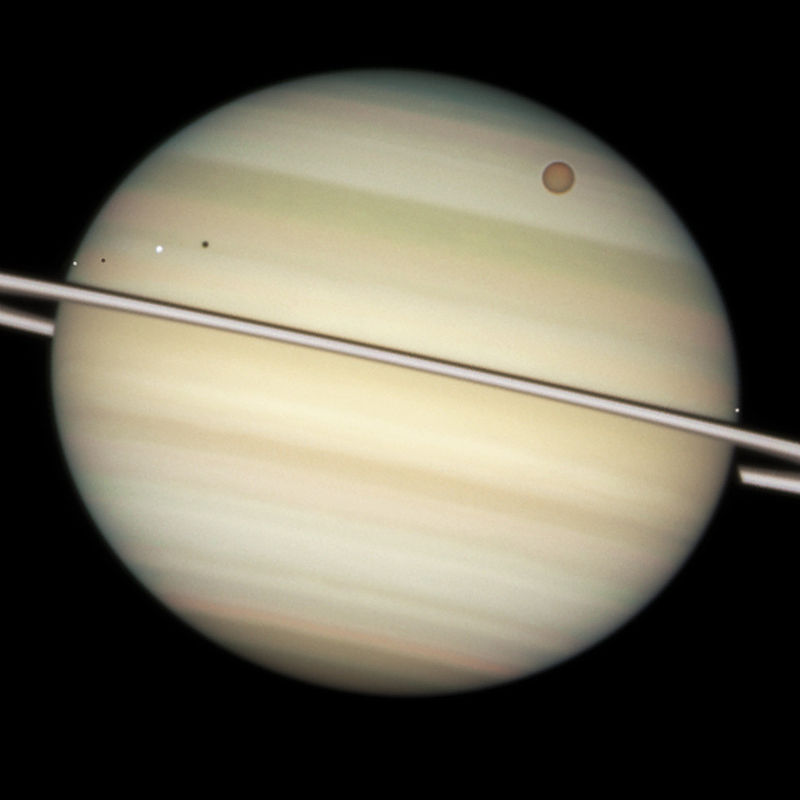
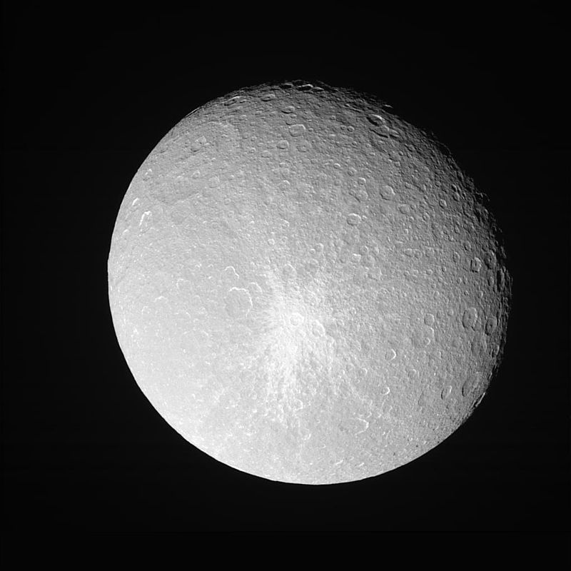
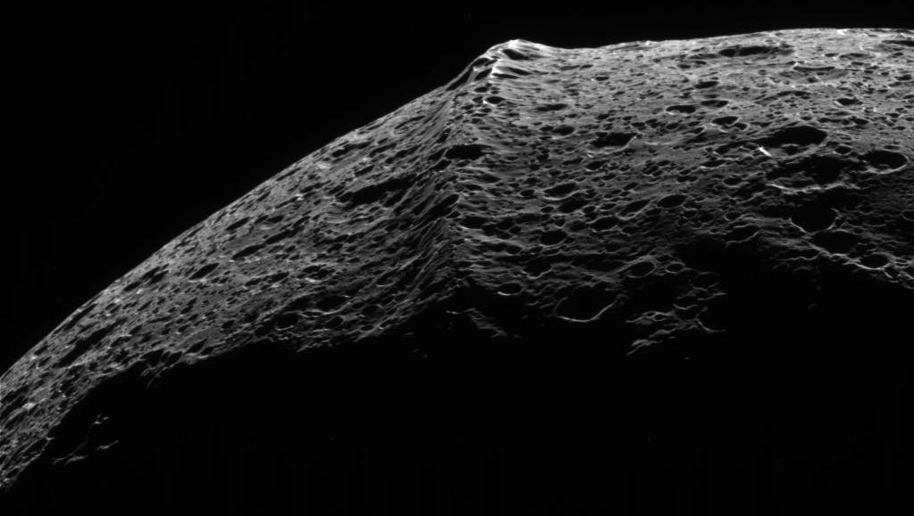

Moons

Moon Facts
The moons of Saturn are numerous and diverse ranging from tiny moonlets less than 1 kilometer across to the enormous Titan which is larger than the planet Mercury.
Atmosphere
- Composition
- ≈ 96% hydrogen (H2)
- Composition
- ≈ 3% helium (He)

Moon Info
Twenty-four of Saturn's moons are regular satellites; they have prograde orbits not greatly inclined to Saturn's equatorial plane.
Composition
- Composition
- ≈ 76% hydrogen (H2)
- Composition
- ≈ 45% helium (He)
Discovery

Saturn has been known since prehistoric times.In ancient times, it was the most distant of the five known planets in the solar system (excluding Earth) and thus a major character in various mythologies. Babylonian astronomers systematically observed and recorded the movements of Saturn.
In ancient Roman mythology, the god Saturnus, from which the planet takes its name, was the god of agriculture..